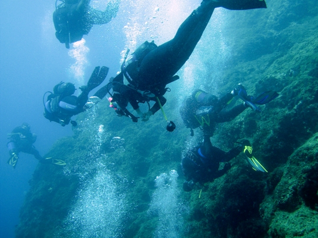

Αυτόνομη κατάδυση

Ως αυτόνομη κατάδυση, ορίζεται η δυνατότητα κατάδυσης με αυτόνομη καταδυτική συσκευή. Ο όρος χρησιμεύει για τη διάκριση της εν λόγω δραστηριότητας από τις λοιπές μορφές κατάδυσης. Συνηθέστερα, η αυτόνομη κατάδυση αποκαλείται SCUBA diving (Self-Contained Underwater Breathing Apparatus). Ο αυτοδύτης, σε αντίθεση με τον δύτη που είναι εξαρτημένος από τον υδρομηχανικό "ομφάλιο λώρο" μέσω του οποίου αντλεί τον ατμοσφαιρικό αέρα ή μείγματα αερίων από σταθμό- φέρει συσκευή συμπιεσμένου αέρα, ιδιότητα στην οποία αποδίδεται η μεγαλύτερη αυτονομία στην υποβρύχια κίνηση αλλά και ο περιορισμός στον χρόνο παραμονής του. Διαφέρει από την ελεύθερη κατάδυση, στην οποία ο δύτης καταδύεται αυτόνομα, χωρίς όμως να φέρει καταδυτικό αναπνευστικό εξοπλισμό.
Ιστορία της κατάδυσης
Από αρχαιοτάτων χρόνων ο άνθρωπος στράφηκε στον υποβρύχιο κόσμο. Η ιδέα της πρώτης αναπνευστικής συσκευής υποβρυχίως - μια χύτρα ανεστραμμένη πάνω από την κεφαλή του δύτη, ώστε να συγκρατεί τον αέρα, ανήκει στον Αριστοτέλη (βλ. Αριστοτέλους Προβλήματα). Ο Θουκυδίδης, επίσης, κάνει αναφορά για δύτες που πριόνιζαν τα υποβρύχια φράγματα προστασίας των Συρακουσίων, ενώ ο Αρριανός εξιστορεί πώς ο Αλέξανδρος έκανε χρήση δυτών στην πολιορκία της Τύρου.
Το όνειρο της παραμονής του ανθρώπου στο νερό παρέμεινε ζωντανό στο διάβα της ιστορίας. Φημισμένοι μηχανικοί του Μεσαίωνα όπως ο Λεονάρντο Ντα Βίντσι, σχεδίασαν, κατασκεύασαν και έθεσαν σε εφαρμογή μηχανισμούς, που θα μπορούσαν να παρατείνουν την παραμονή του δύτη στο νερό, κυρίως για κατασκευαστικούς ή πολεμικούς λόγους. Χρησιμοποιήθηκαν κώδωνες, ασκοί και πολυάριθμα άλλα υλικά με σχετική επιτυχία για τους σκοπούς που προορίζονταν. Η πρώτη κατασκευή αναπνευστικής συσκευής έρχεται από τον Ρότζερ Μπέικον το 1240. Έκτοτε ακολουθεί περίοδος ύφεσης για να φθάσουμε στον 17ο αιώνα και μετέπειτα στη βιομηχανική επανάσταση, οπότε και θεμελιώθηκε η πρακτική τεχνική της κατάδυσης με τη βοήθεια των ραγδαία αναπτυσσόμενων επιστημών. Σημαντική προσφορά για την ανάπτυξη της καταδυτικής λειτουργίας και βοήθεια για την κατανόηση της συμπεριφοράς του ανθρώπου σε υπερβαρεϊκό περιβάλλον στάθηκε η ανακάλυψη του Άγγλου Ρόμπερτ Μπόιλ (Robert Boyle), ο οποίος περί το 1660 μελέτησε τις φυσικές ιδιότητες του συμπιεσμένου αέρα. Ο νόμος του Μπόιλ περιγράφει την επίδραση της αλλαγής της πίεσης στον όγκο και την πυκνότητα των αερίων, γεγονός υψίστης σημασίας για την καταδυτική φυσιολογία.
Η πρώτη περιγραφή συσκευής ανταποκρινόμενης στους στόχους της κατάδυσης δημοσιεύθηκε από τον μαθηματικό Σκοτ στο περιοδικό Technica Curiosa το 1664 και ήταν ένας κώδωνας. Λίγα χρόνια αργότερα, το 1669 ο Σινκλέρ δημοσίευσε τα σχέδια ενός καταδυτικού μηχανήματος που είχε χρησιμοποιηθεί το 1588 και το 1665 σε αναζήτηση ναυαγίων με θησαυρούς. Αργότερα, οι Χάλεϊ και Σμίτον βελτίωσαν τον σχεδιασμό του κώδωνα και έγιναν οι πρώτες εφαρμογές του σε μια ποικιλία υποβρύχιων δραστηριοτήτων. Ακολούθησε ο μαθηματικός και φυσικός Τζιοβάνι Μπορέλι (Giovanni Alfonzo Borelli), το έργο του οποίου εκδόθηκε το 1680, που εμπνεύστηκε και διατύπωσε τη σύσταση σχεδόν ολόκληρου του εξοπλισμού (κώδωνα, υποβρύχιο, καταδυτική συσκευή κ.λπ.) σε θεωρητικό επίπεδο. Πρακτικά οι συσκευές του δε δοκιμάστηκαν ποτέ. Στη συνέχεια, περίπου το 1840, οι Μπενουά Ρουκαϊρόλ (Benoit Rouquayrol) και Ογκίστ Ντενερούζ (Auguste Denayrouze) βελτίωσαν το πρωτόγονο σκάφανδρο του Αουγκούστους Σιέμπε (Augustus Siebe) και το 1878 παρουσιάστηκε η πρώτη συσκευή κλειστού κυκλώματος. Όσον αφορά στην Ελλάδα, το 1866 ο Συμιακός Φώτιος Μαστορίδης έκανε χρήση σκαφάνδρου για την σπογγαλιεία, δίνοντας μια νέα διάσταση στο επάγγελμα. Το σκάφανδρο Μαστορίδη, είχε δωρίσει αγγλική ναυαγοσωστική εταιρεία ως αναμνηστικό δώρο για την προσφορά του σε εργασίες στις lνδικές Θάλασσες.
Η σημαντική εφεύρεση, το 1920, των πτερυγίων κολύμβησης, από τον Υποπλοίαρχο του γαλλικού ναυτικού Κορλύ, επέλυσε το πρόβλημα της προώθησης υποβρυχίως και παρείχε το έναυσμα για την αυτόνομη κατάδυση. Από εκεί και πέρα η επινόηση και τελειοποίηση του ρυθμιστή πίεσης από τον Ζακ Κουστώ και τον Γκανιό άλλαξε ριζικά το σκηνικό. Με τη βοήθεια ανδρών όπως ο Ντιμά, ο Χανς Χας κ.α. πραγματοποιούνται σπουδαία άλματα για την κατάκτηση των βυθών. Σε αυτό το σημείο βέβαια θα πρέπει να αναφερθεί πως ένας από τους σπουδαιότερους παράγοντες για την αλματώδη ανάπτυξη της μελέτης και τεχνολογίας των καταδύσεων υπήρξε η τελειοποίηση του καταδυτικού υλικού.>
Στην Ελλάδα σημαντική προσφορά στην ανάπτυξη της αυτόνομης κατάδυσης παρείχε η Μονάδα Υποβρυχίων Καταστροφών (Μ.Υ.Κ.) και πιο συγκεκριμένα ο διοικητής της Μανώλης Παπαγρηγοράκης, ο οποίος ενδιαφέρθηκε ιδιαίτερα για την εγκαθίδρυση και τεκμηρίωση του θεωρητικού υπόβαθρου για το γνωστικό πεδίο της αυτόνομης κατάδυσης και φυσικά του κατάλληλου εκπαιδευτικού προγράμματος. Έκτοτε, παρόλο το σφικτό και αρνητικό προς τις καταδύσεις νομικό υπόβαθρο στην Ελλάδα, υπήρξε ραγδαία ανάπτυξη αυτής της ενδιαφέρουσας δραστηριότητας με τις πολλαπλές δυνατότητες σε ερασιτεχνικό και επαγγελματικό επίπεδο.
Βασικά στοιχεία καταδυτικού εξοπλισμού
Η κατάδυση είναι δυνατή χάρις στον εξειδικευμένο σύγχρονο εξοπλισμό που βοηθά στην προσαρμογή του αυτοδύτη στο υδάτινο περιβάλλον.
Είναι από τα βασικότερα στοιχεία εξοπλισμού και υπάρχει σε πολλές ποικιλίες μονοπτικού, διοπτικού και πολυοπτικού τύπου. Η σωστή εφαρμογή στο πρόσωπο, το ικανοποιητικό οπτικό πεδίο και τα βέλτιστα υλικά κατασκευής αποτελούν το πρωταρχικό στοιχείο που οφείλει να εξετάσει ο αυτοδύτης. Πέραν τούτου, η επιλογή αποτελεί θέμα αρέσκειας και οικονομικής δυνατότητας.
Είναι εύκαμπτα πτερύγια, ελαφριάς κατασκευής και παρέχουν άνεση, ευελιξία και ταχύτητα στον αυτοδύτη. Προσφέρονται σε δύο τύπους: ανοικτά και κλειστά. Στην αυτόνομη κατάδυση προτιμούνται κυρίως τα πέδιλα ανοικτού τύπου, καθώς επιτρέπουν περισσότερες κινήσεις στο πόδι, καλύτερη θερμική προστασία εξαιτίας της χρήσης μπότας και προστασία από κτυπήματα κατά την προετοιμασία της κατάδυσης. Η ευκαμψία των πτερυγίων ποικίλει ανάλογα με το υλικό κατασκευής τους.
Υλικό εξοπλισμού που επιτρέπει την παρακολούθηση του βυθού, χωρίς την ανάγκη επιφανειακής αναπνοής απ' τον αυτοδύτη. Υπάρχουν πολλά είδη αναπνευστήρων που διαφέρουν ως προς το σχεδιασμό και το υλικό κατασκευής. Εκείνο που πρέπει να λάβει σοβαρά υπόψιν του ο αυτοδύτης είναι το μέγεθος του σωλήνα το οποίο δεν πρέπει να υπερβαίνει τα 42 εκ., να παρουσιάζει στο άνω μέρος του σωλήνα ανακλαστική ταινία ώστε να γίνεται ορατός από μακριά, να διαθέτει μαλακό επιστόμιο για να μην κουράζει τα ούλα και τα δόντια καθώς και ειδικό λουράκι που να τον στηρίζει στη θέση του.
Από τα σημαντικότερα στοιχεία ασφάλειας του αυτοδύτη. Εν προκειμένω, το μαχαίρι δε θεωρείται όπλο, αλλά ένα πολύ σημαντικό εργαλείο στο βυθό, με το οποίο ο αυτοδύτης μπορεί, προκειμένου να αποφύγει την εμπλοκή του, να κόψει κάποιο σκοινί ή δίκτυα, ακόμη και να μετρήσει μικρά αντικείμενα στο βυθό. Επίσης, με την κρούση του στη φιάλη του, είναι δυνατόν να τραβήξει ηχητικά την προσοχή του/των συντρόφων του.
Σημαντικότατο στοιχείο εξοπλισμού που επιτρέπει στον αυτοδύτη να ρυθμίσει την πλευστότητά του κατά βούληση, αυξομειώνοντας τον όγκο του. Ο ρυθμιστής πλευστότητας είναι δυνατόν να πληρωθεί με μηχανικό τρόπο, από παροχή χαμηλής πίεσης του ρυθμιστή ή με το στόμα. Για το άδειασμά του είναι εφοδιασμένος με βαλβίδες ταχείας και βραδείας ανακούφισης. Στην αγορά παρουσιάζεται σε τύπο κολάρου, πλάτης και τζάκετ. Τα τελευταία προσφέρουν την καλύτερη δυνατή ασφάλεια και ισορροπία του αυτοδύτη κατά την πλεύση του προς την επιφάνεια, χωρίς να δυσχεραίνουν την κίνηση και κυριαρχούν στην προτίμηση των αυτοδυτών κατά τα τελευταία χρόνια.
Είναι ο μηχανισμός εκείνος ο οποίος μειώνει την απόλυτη πίεση της φιάλης σε τέτοια τιμή, ώστε να καθίσταται ο αέρας της φιάλης αναπνεύσιμος. Διακρίνεται στα στάδια, α' και β' και παρέχει τη δυνατότητα εξόδων χαμηλής και υψηλής πίεσης οι οποίες είναι δυνατόν να χρησιμοποιηθούν για την πλήρωση του BCD, δεύτερο β' στάδιο (χταπόδι) και από τα όργανα ελέγχου. Οι ρυθμιστές διακρίνονται σε ισορροπημένους και μη ισορροπημένους. Οι πρώτοι έχουν τη δυνατότητα να παρέχουν με σταθερή πίεση όλο τον αέρα της φιάλης, ενώ οι δεύτεροι παρουσιάζουν μείωση της πίεσης και συνεπώς αυξημένη αντίσταση αναπνοής, όσο μειώνεται η πίεση της φιάλης.
Όπως και ο ρυθμιστής πλευστότητας, η ζώνη βαρών συνιστά μηχανισμό ελέγχου της πλευστότητας του αυτοδύτη. Σημαντικά στοιχεία για τη ζώνη είναι η παρουσία πόρπης ταχείας απελευθέρωσης, μηχανισμών συγκράτησης βαρών και η ορθή κατανομή των βαρών, ώστε να μην επιβαρύνεται η μέση (ιδιαίτερα για τις γυναίκες) και να αποφεύγεται η εμπλοκή με τη φιάλη ή το ρυθμιστή πλευστότητας.
Παρέχει θερμική προστασία στον αυτοδύτη, καθώς και προστασία από κτυπήματα ή κοψίματα που πιθανώς θα προκληθούν από την επαφή του με το βυθό. Οι στολές διακρίνονται σε υγρού και ξηρού τύπου. Ευρέως διαδεδομένες για τις καταδύσεις αναψυχής είναι οι υγρού τύπου. Οι ξηρού τύπου χρησιμοποιούνται περισσότερο για εξειδικευμένες καταδύσεις σε ακραίες θερμοκρασιακές συνθήκες και με απαιτήσεις υψηλής ασφαλείας. Όσον αφορά στις στολές υγρού τύπου, κυκλοφορούν σε διαφορετικούς σχεδιασμούς προκειμένου να εκπληρώνουν διαφορετικές ανάγκες του αυτοδύτη. (Μονοσόρτ, ολόσωμη, με ενσωματωμένη ή μη κουκούλα, παντελόνια λονγκ τζον, μποτάκια, κάλτσες, γάντια κ.λπ.).
Είναι δοχείο ποικίλης χωρητικότητας, που μεταφέρει με ασφάλεια αέρα υψηλής πίεσης. Όλες οι φιάλες έχουν σχήμα και μέγεθος ανάλογο με τον τύπο και το εργοστάσιο κατασκευής τους. Συνηθέστερες είναι οι φιάλες χωρητικότητος 10, 12, 15 και 18 lt. Γεμίζουν με ατμοσφαιρικό αέρα υπό πίεση 200-300 ΑΤΜ και το υλικό κατασκευής τους είναι είτε χρωμομολυβδένιο ατσάλι είτε κράμα αλουμινίου. Εξαιτίας της διαρκούς πίεσης στην οποία βρίσκονται οι φιάλες, οι προδιαγραφές κατασκευής τους καθορίζονται από κρατικούς φορείς. Οι πιο γνωστοί είναι ο DΟΤ (Department of Transportation) στις Η.Π.Α, ο DΙΝ (Deutsche Industrie Normen) στη Γερμανία, και ο EURS (European Standards).
Είναι θήκες σε ποικίλα σχήματα, που περιέχουν όλα τα αναγκαία όργανα με τα οποία παρακολουθεί ο δύτης το βάθος της κατάδυσης (βαθύμετρο) την πίεση της φιάλης και συνεπώς τα αποθέματα αέρα (μανόμετρο) και την κατεύθυνσή του υποβρυχίως (πυξίδα). Είναι δυνατόν, επίσης, να περιέχουν ενσωματωμένο θερμόμετρο για την παρακολούθηση της θερμοκρασίας. Όλα τα παραπάνω όργανα που περιέχονται στις συνήθεις κονσόλες ελέγχου είναι αναλογικά, έχουν δηλαδή μηχανική λειτουργία και παρέχουν ένα ικανοποιητικό πλέγμα πληροφοριών, έτσι ώστε να παραμένει ο δύτης μέσα στα όρια σχεδιασμού της κατάδυσής του.